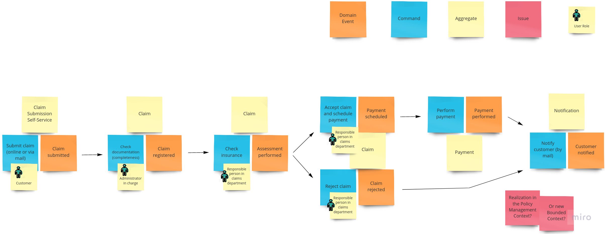

Chap 1 : Faire ce qu'il faut et le faire bien

M4104 - PEL : Agilité et bonnes pratiques de programmation
Institut Universitaire de Technologie de Bayonne et du Pays Basque
Robin Lucbernet - Christophe Marquesuzaà - Damien Urruty
DUT Informatique 2021 / 2022 - Semestre 4
Quel est le point commun entre
Mars Climate Orbiter
- Sonde écrasée sur Mars en 1999
- Erreur causée par un problème d'unité (système métrique vs anglo-saxon)
- Coût total : $327 millions
Faille de sécurité Apple
Saurez-vous trouver la faille ?
Apple "goto fail"

Apple goto fail
- Faille dans la validation de certificats HTTPS (iOS et OS X)
- Double goto court-circuitant des validations
- Des millions de machines vulnérables
- Volontaire ou involontaire ?
Gandhi dans le jeu
- Censé être le personnage le plus pacifique du jeu
- A cause d'un integer underflow devient le plus aggressif
Bug, bug, bug...
- Ce ne sont que 3 exemples parmi des millions (voir M2204 et M3301 pour d'autres cas)
- Il y aura toujours des comportements non prévus et des bugs...

Chaos report (2015)
Bon alors, on fait quoi ?

Un produit logiciel de qualité : c'est quoi ?
Qualité logicielle selon ISO 9126
Capacité fonctionnelle (Functionality)
- L’aptitude (Suitability)
- L’exactitude (Accuracy)
- L’interopérabilité (Interoperability)
- La conformité (Compliance)
- La sécurité (Security)
Facilité d’usage (Usability)
- L’exploitabilité (Operability)
- La facilité d’apprentissage (Learnability)
- La facilité de compréhension (Understandability)
Fiabilité (Reliability)
- La maturité (Maturity)
- La tolérance aux fautes (Fault Tolerance)
- La capacité de récupération (Recoverability)
Efficacité (Efficiency)
- L’efficacité des ressources employées (Resource Behaviour)
- L’efficacité des temps de réalisation (Time Behaviour)
Maintenabilité (Maintainability)
- La stabilité (Stability)
- La facilité de modification (Changeability)
- La facilité d’analyse (Analysability)
- La facilité à être testé (Testability)
Portabilité (Portability)
- La facilité d’installation (Installability)
- La facilité de migration (Replaceability)
- L’adaptabilité (Adaptability)
On peut grouper ces catégories en 2 familles
- Build the right thing (faire ce qu'il faut):
- Capacité fonctionnelle
- Facilité d'usage
- Build the thing right (faire bien):
- Fiabilité
- Efficacité
- Maintenabilité
- Portabilité
Build the right thing
Ce qui va dans le logiciel est ce que les développeurs ont compris
=> Il faut rapprocher les demandeurs et les dévs
Quelques outils (1) : UX design
Quel est le problème que l'on cherche à résoudre ?
Quelques outils (1) : UX design
Quelques outils (1) : UX design
Exemple de discussion
- Client : J'ai besoin d'un logiciel pour extraire des informations d'un PDF
- Dév : Intéressant ! D'où vient ce besoin ?
- Client : Les commerciaux ramènent leurs bons de commande aux secrétaires...
- Client : qui les scannent et les font suivre au département Marchandises...
- Client : Nous voudrions pouvoir extraire ces informations pour anticiper les stocks
Quelques outils (1) : UX design
Le but de cette démarche est de :
- comprendre le vrai besoin et les difficultés rencontrées par les utilisateurs
- proposer une solution adaptée
- Note : en général on ne va pas chez le médecin en lui annonçant le traitement que l'on veut
Quelques outils (2) : Event Storming

Quelques outils (2) : Event Storming
Quelques outils (3) : Example mapping
Quelques outils (3) : Example mapping
Build the thing right
Build the thing right : comment ?
- Clean code (Maintenabilité)
- Tests (Stabilité, Fiabilité)
- Refactoring continu (Maintenabilité)
- Nous verrons ces techniques en détail dans les prochains chapitres
Build the right thing & build the thing right
Est-ce que mon code répond au besoin ?
Est-ce que mon code est bien écrit ?
Boucles de feedback
Une solution possible
Livraisons très fréquentes (de une à quelques semaines)
- Réduit l'effet tunnel
- Fournit régulièrement un logiciel fonctionnel aux utilisateurs
- Raccourcit le feedback
Développement itératif et incrémental
- Make it work - Make it clean - [Make it fast]
- Permet de supporter les livraisons fréquentes
- Réactivité au changement
Revues de code
Revues de code
- Du code écrit par un développeur...
- ... relu et commenté par un autre
- But : trouver des bugs, challenger le code/design, partager la connaissance
- Différents formats : formel, informel
Revues de code
Programmation sans égo
blog.codinghorror.com/the-ten-commandments-of-egoless-programmingRevues de code
Effet Dunning-Kruger
Pair programming
Pair programming
- Un binôme qui travaille sur un même problème en même temps
- Avantages
- Revue de code en direct
- Partage de connaissances (réduit le bus factor)
- Dans l'ensemble meilleure qualité
- Différents modes de fonctionnement
Pair programming - Driver/Navigator
- Un pilote qui s'occupe uniquement du clavier
- Un co-pilote qui donne des instructions de haut-niveau
- Des rotations très fréquentes (max toutes les 10min)
Pair programming - Strong style
- Pour qu'une idée soit implémentée dans le code...
- ...elle doit passer par les mains de quelqu'un d'autre
- Force le binôme à s'aligner sur les objectifs
Pair programming - Ping-pong

- Le clavier passe de main en main très rapidement
- Habituellement utilisé en faisant du TDD
- Une personne écrit le test, une autre écrit l'implémentation
Mob programming
Mob programming
"All the brilliant people, working on the same thing, at the same time, in the same space, and at the same computer."
Mob programming
Pair programming sous stéroïdes
Une journée type (youtube.com/watch?v=dVqUcNKVbYg)Amélioration continue
Amélioration continue - Organisation
- Il est important de parfois s'arrêter et prendre du recul
- On parle de faire une rétrospective
- C'est l'occasion de voir ce qui a marché ou pas et ce que l'on peut améliorer
- Il faut le faire régulièrement pour que cela soit efficace
Amélioration continue - Compétences
Amélioration continue - Compétences
Quelques recommandations
- Lire des livres
- Regarder des tutos vidéos
- Aller à des conférences/meetups